2023-04-24
Jean-Michel Perraud, CSIRO Environment
Introduction
This document is a short guide to install the CSIRO ensemble streamflow forecasting software stack that includes tools known as SWIFT2, FoGSS, CHyPP. This document is, or will be, available from https://csiro-hydroinformatics.github.io/streamflow-forecasting-tools-onboard/.
The windows installer is available upon prior agreement from https://data.csiro.au/collection/csiro:58370v1
Installation
You should have access to a windows installer file “sf.msi” of around 40MB. This installer should work on at least Windows 10 or later. It may work on older versions of Windows but has not been tested.
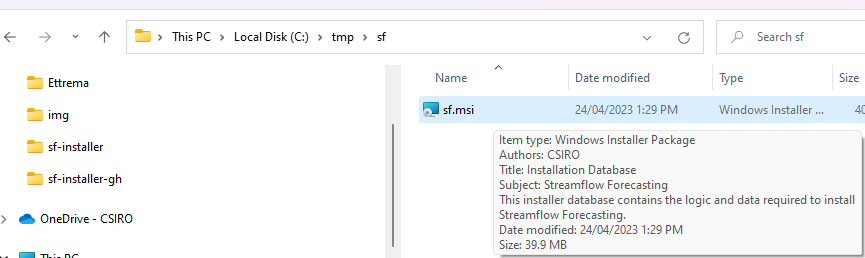
The installer is signed with a cryptographic signature certified by a third party, which should facilitate the approval from your IT department if required.
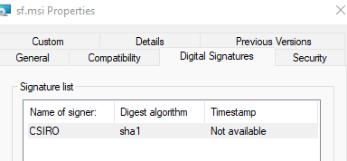
This document outlines the steps to perform for a “normal” user without particularly elevated privileges on the installation machine. It is possible to install as an Administrator for all users, but this is not documented here.
An installation consists of two steps in practice. The installer installs native libraries, sets environment variables, and copies installable packages for R, python, MATLAB. You can then use the latter to install these packages in your environment. There are many ways to manage R and python environments, so this step cannot be handled automatically by the windows installer.
Windows installer
Execute the file sf.msi
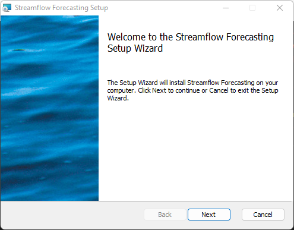
Do read the license agreement. If you have access to this installer, you should probably already have had prior discussions with the product distributors to agree on the scope of use of the products.
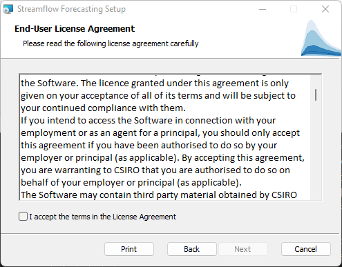
As a user-level installation you will be prompted with a conventional default location. You may change the destination folder if required.
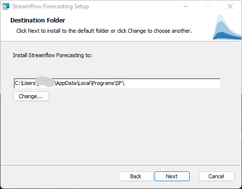
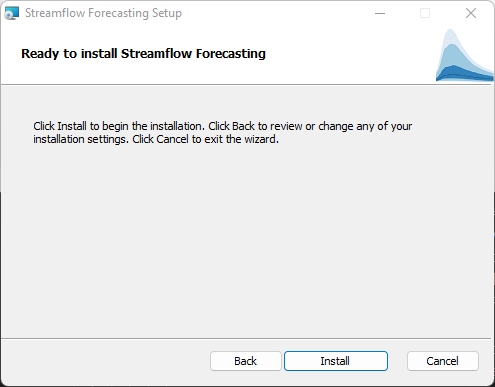
The installation will typically take a few seconds to proceed.
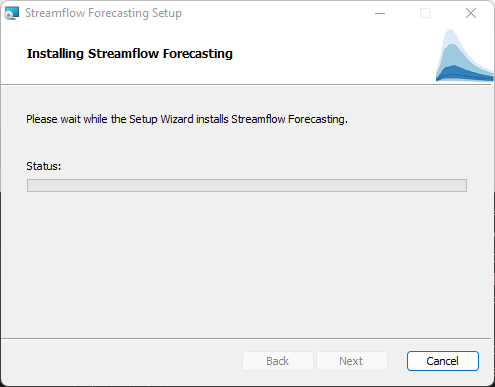
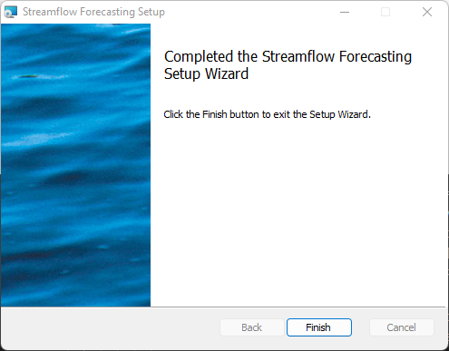
Checking the base installation
One way to check the installation worked as desired is to open a new command prompt. The command `where chyppapp` should return a path.
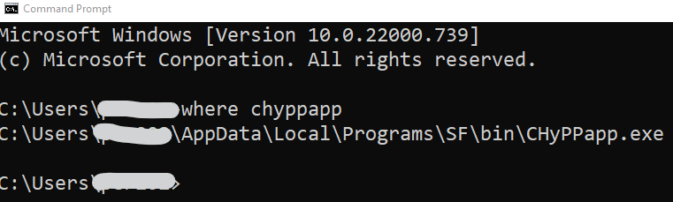
Then ` chyppapp --help` should work and display a help output.
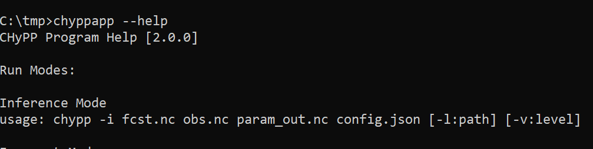
Uninstalling
The installer is well integrated in the Windows system, and to repair or uninstall the stack you can use the “Add and remove” panel of Windows. Uninstalling will remove all installed files and revert changes to the environment variables `PATH` and `LIBRARY_PATH`
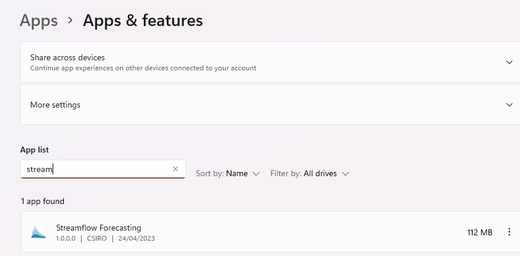
Installing other packages
From the start menu, go to “All apps” (note: screen captures are made on Windows 11).
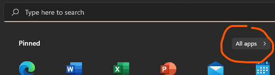
In the “S” section you will find a “Streamflow Forecasting” folder, with a shortcut to the installation folder.
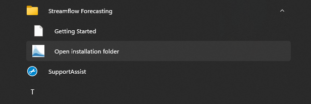
This will open the installation folder which includes the additional files for R, python and matlab.
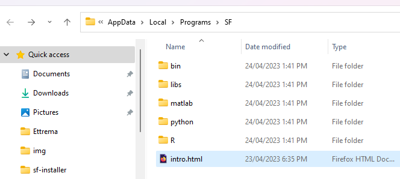
Installing R packages
R packages are available in source and precompiled “win.binaries” form. The latter is easy and fast. Installing from source is out of scope of this document. However, Windows binary packages are version dependent. The installer includes packages for R 4.2.x, the current latest stable version of R. If you need another version of the packages, please contact the authors.
Open an R terminal.
Check with the command `.libPaths()` that the first folder is user specific, so that you will be able to install the packages. It is likely R would likely prompt you if not, and would created one in the process.
Then you will need the root name of the small R library folder where R packages are, e.g. "C:\Users\xxxyyy\AppData\Local\Programs\SF\R" if you have chosen the default option for an destination folder.
Adapting the following command should install the streamflow forecasting packages and their third party dependencies
`install.packages(c('calibragem', 'mhplot', 'efts', 'swift', 'qpp'), repos=c('file:///C:/Users/xxxyyy/AppData/Local/Programs/SF/R', 'https://cran.csiro.au'), type='win.binary')`
Upon successful installation you should be able to load the `swift` package:
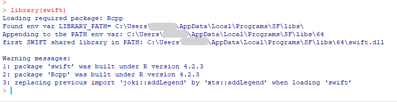
The command `?swift` should open an HTML page in a browser. At the bottom of the page you can find a shortcut to the package index.
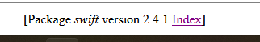
The package Index page should also include a link to the introductory vignettes:
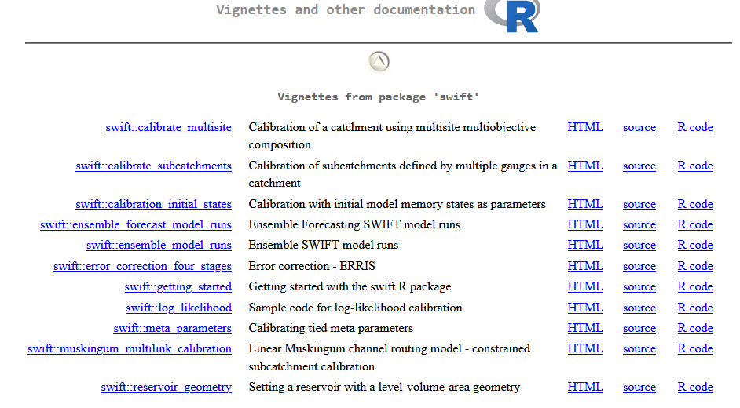